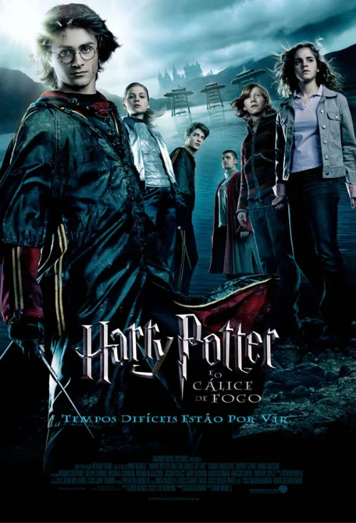

Ai vai um resumo de todos os 8 filmes de Harry Potter!
Harry Potter e a pedra filosofal

O jovem órfão Harry Potter descobre que é um bruxo quando é convidado a ingressar na Escola de Magia e Bruxaria de Hogwarts. Lá, ele faz amizade com Ron Weasley e Hermione Granger. Juntos, eles descobrem que a lendária Pedra Filosofal está guardada em Hogwarts e que o sombrio Lord Voldemort busca obtê-la para recuperar sua forma física e poder. Harry e seus amigos enfrentam desafios mágicos para proteger a pedra e impedir que Voldemort retorne ao poder.
Harry Potter e a camara secreta

No segundo ano de Harry em Hogwarts, estranhos eventos começam a ocorrer, incluindo mensagens escritas com sangue nas paredes e estudantes petrificados. Harry descobre que a Câmara Secreta foi reaberta, uma antiga lenda que envolve um monstro mítico. Ele e seus amigos tentam desvendar a verdade por trás da câmara e evitar que mais estudantes sejam prejudicados.
Harry Potter prisioneiro de Azkabam
O terceiro ano traz o fugitivo Sirius Black, supostamente aliado de Voldemort, à cena. Harry descobre a verdade sobre sua conexão com os acontecimentos do passado e sobre a traição de um dos seus. Enquanto lida com a prisão de Azkaban, Dementadores sugadores de alma e uma criatura chamada "Testrálio", Harry enfrenta uma série de revelações emocionais e desafios mágicos.
Harry Potter e o Calice de fogo
Harry é inesperadamente escolhido para competir no perigoso Torneio Tribruxo, apesar de ser menor de idade. Enquanto enfrenta dragões, resgata pessoas das profundezas de um lago e navega por um labirinto mortal, ele descobre que Voldemort retornou à forma física. O filme culmina com um confronto trágico e a ressurreição do Lorde das Trevas.
Harry Potter e a ordem da fenix

No quinto ano, Harry enfrenta o ceticismo do Ministério da Magia sobre o retorno de Voldemort. Ele forma a Armada de Dumbledore para ensinar defesa contra as artes das trevas e se confronta com a implacável professora Umbridge. A luta contra as forças das trevas se intensifica, culminando na batalha no Ministério da Magia.
Harry Potter e o Enigma do principe
No sexto ano, Dumbledore leva Harry a investigar memórias para descobrir mais sobre a juventude de Voldemort e suas Horcruxes. Enquanto Voldemort fortalece suas forças, Harry e seus amigos lidam com questões de amor e amizade. Dumbledore e Harry partem em uma missão perigosa para encontrar uma Horcrux.
Harry Potter e as Reliquias da morte pt:1
No penúltimo filme, Harry, Ron e Hermione se tornam fugitivos, procurando as Horcruxes para destruir Voldemort. A jornada os leva a enfrentar perigos na terra dos trouxas e descobrir a lenda das Relíquias da Morte. O filme termina com o sequestro de Hermione e a busca por respostas.
Harry Potter e as Reliqueas da morte pt:2
O último filme culmina na batalha final em Hogwarts. Harry, Ron e Hermione se reúnem com antigos amigos e enfrentam um exército de seguidores de Voldemort. A batalha épica entre o bem e o mal leva a confrontos emocionais e sacrifícios, enquanto Harry enfrenta seu destino e se prepara para o confronto final com o Lorde das Trevas. O filme encerra a jornada de Harry com um epílogo que mostra seus personagens principais mais velhos, enviando seus próprios filhos para Hogwarts.